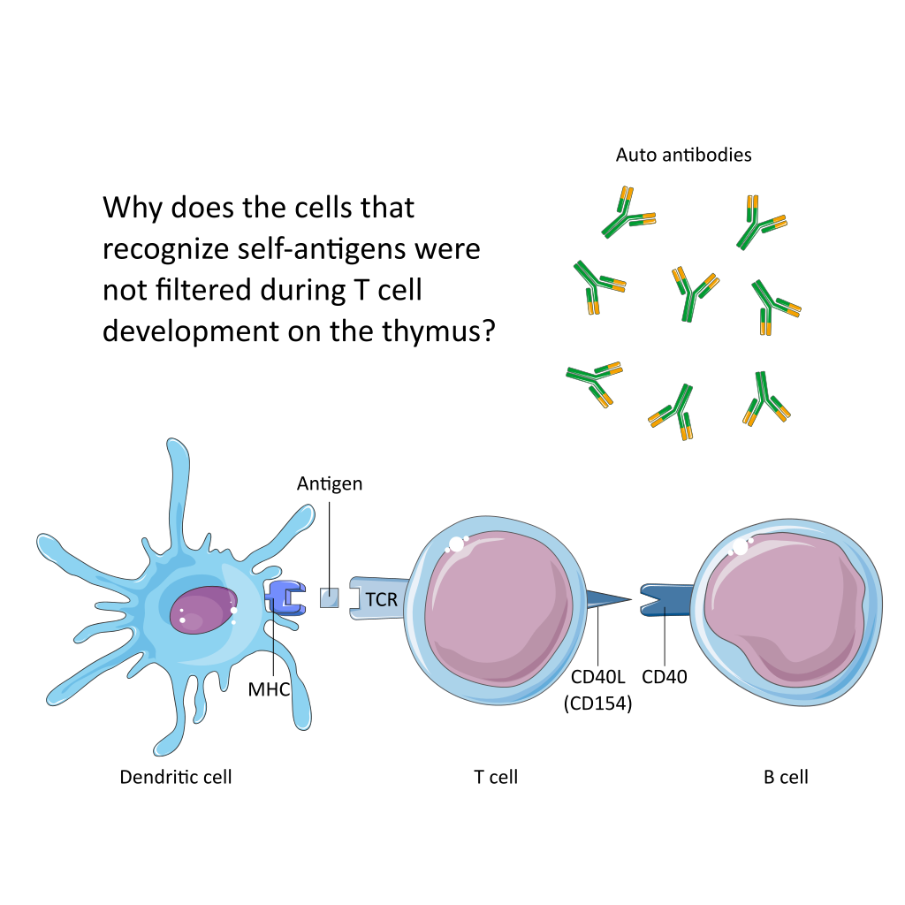

Hello World
- 👋 Post-doc researcher on computational cell bioloogy🔬🖥️ on biomedical images, judoka🥋, knowledge enthusiast🛰️🔭, father, and husband👨👩👧. Not necessarily in this order.
- 🔭 I’m currently working on image-based spatial transcriptomics data analysis of non-small cell lung caner (NSCLC) samples in the Computational Systems Biology Laboratory at University of Sao Paulo (USP).
- 🌱 I’m currently learning adaptive immune cell system interactions.
- 👯 I’m looking to collaborate on the role of T cells in cancer and autoimmune diseases.
- 🤔 I’m looking for help with with statistical analysis for different proportions of cell types in a population.
- 💬 Ask me about Machine Learning and Bioimage analysis ideas.
ArchipelaGO
🏝️ ArchipelaGO is an R package designed for the spatial analysis of transcriptomics data, enabling the identification and characterization of spatially enriched regions, or "islands," of gene expression. It works by calculating enrichment scores for user-defined gene sets across spatially resolved cells or spots, revealing the spatial distribution of biological processes and cellular functions within a tissue. Using ArchipelaGO, researchers can uncover cellular and functional heterogeneity, identify co-localization of biological processes, and explore the spatial organization of tumor cells and immune cells within the microenvironment.
Why?

Contact
📫 Get in touch: mauro_morais@usp.br or mauroccm@gmail.com